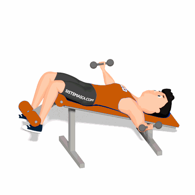

Crucifixo Declinado com Halteres

Exercício para fortalecimento e hipertrofia da região peitoral e deltoides. Possuí uma dificuldade de nível iniciante.
Ficha Técnica
Tipo: Musculação
Grupo Muscular: Peito
Aparelho: Nenhum
Músculos: Nenhum
Como realizar
- Segure um par de halteres e deite-se de costas em um banco declinado;
- Levante os halteres acima do peito, com as palmas das mãos voltadas uma para a outra;
- Flexione os cotovelos ligeiramente;
- Abaixe os halteres devagar para os lados e para longe do corpo formando um arco com os braços;
- Quando os halteres estiverem praticamente alinhados com o peito, inverta o movimento e retorne à posição inicial;
- Contraia os músculos peitorais no topo do movimento.
 RC STORE
RC STORE